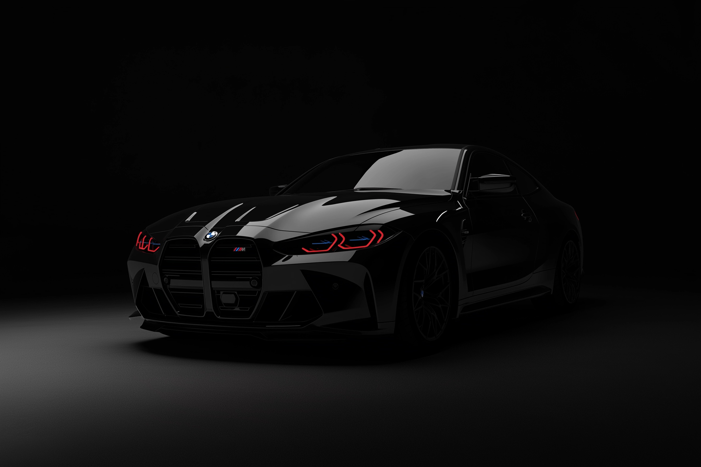
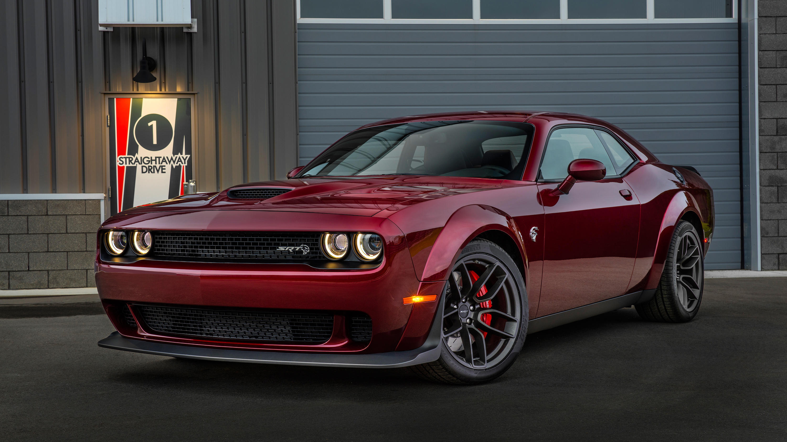
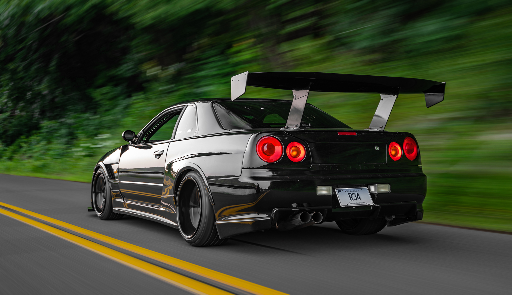
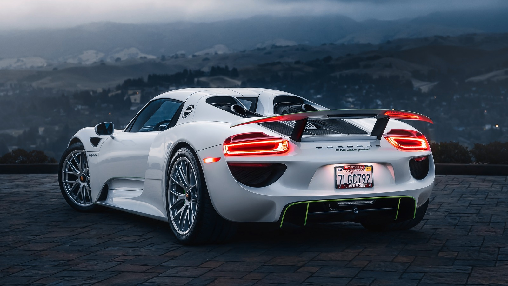
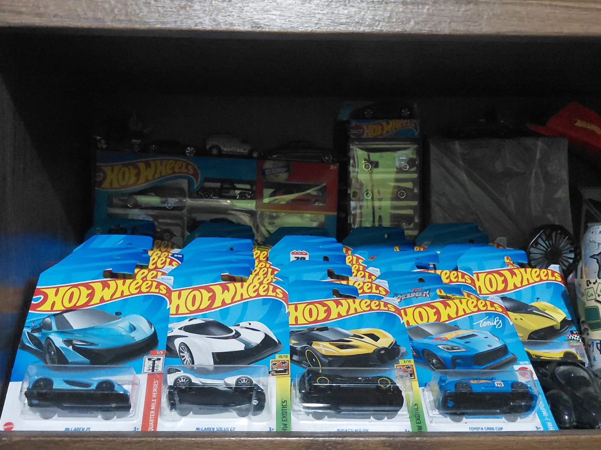

Mi Pasión por los Carros
Velocidad, diseño y adrenalina sobre ruedas
¿Por qué me apasionan los carros?
Desde pequeño, los carros han sido más que simples vehículos para mí. Me fascina la ingeniería detrás de cada modelo, cómo cada pieza trabaja en armonía para crear una máquina perfecta. El rugido del motor, el diseño aerodinámico y la tecnología que evoluciona año con año me mantienen siempre interesado en aprender más.
Lo que más disfruto es conocer las especificaciones técnicas, comparar modelos y soñar con algún día tener mi propio auto deportivo. Cada marca tiene su identidad, su filosofía de diseño, y eso es lo que hace este mundo tan diverso e interesante.

Tiempo que dedico a esta pasión
Diariamente
1-2 horas viendo videos, reviews y noticias automotrices
Fines de semana
Visito exposiciones de autos, ferias o simplemente salgo a ver modelos en la calle
Videojuegos
Juego simuladores de carreras para experimentar diferentes modelos
Mis Modelos Favoritos

Dodge Challenger SRT Hellcat
Pura potencia americana con 717 HP de músculo supercharged

Nissan Skyline GT-R R34
La leyenda japonesa que conquistó las calles y las pistas

Porsche 918 Spyder
Híbrido revolucionario que combina eficiencia con rendimiento extremo
Una Pequeña Parte De Mi Colección
Desde hace varios años, he estado construyendo mi colección personal de Hot Wheels. Lo que comenzó como un simple hobby, se ha convertido en una verdadera pasión por coleccionar réplicas en miniatura de los autos más icónicos del mundo automotriz.
Cada Hot Wheels en mi colección representa un modelo especial: desde muscle cars clásicos americanos, pasando por superdeportivos europeos, hasta JDM legendarios. Me gusta buscar ediciones limitadas, modelos raros y aquellos que replican mis autos favoritos de la vida real.
Coleccionar Hot Wheels me permite tener cerca los autos de mis sueños, estudiar sus detalles y apreciar el diseño automotriz desde otra perspectiva. Cada pieza tiene su historia y su lugar especial en mi colección.
